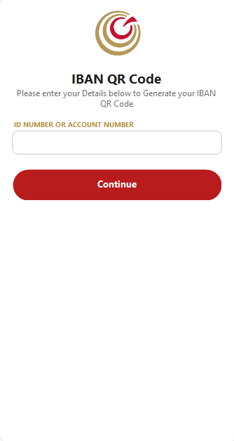
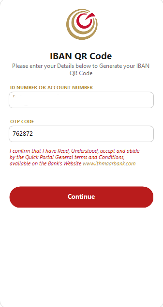
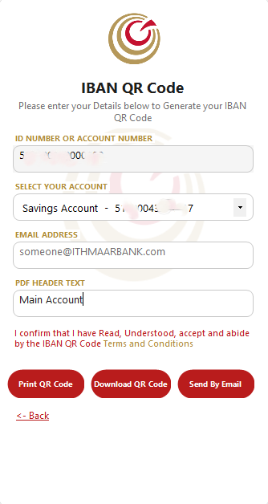
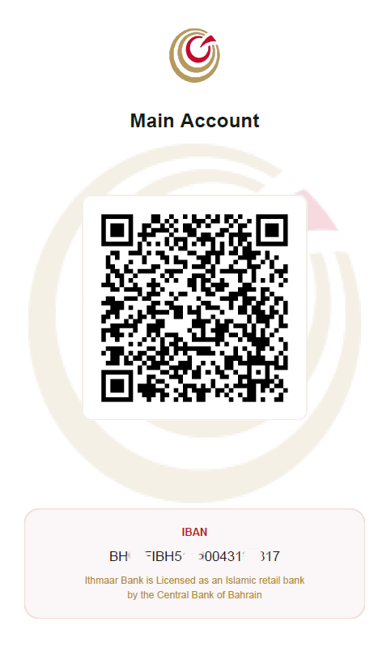

banking · C# / .NET
IBAN QR Code app
An internal desktop tool that generates Bahraini IBANs and QR codes, then creates PDF reports and handles email delivery.

The brief
This project is an add-on to the bank’s e-services. Customers enter their account number, choose from their linked accounts, and generate an IBAN QR code for easy pay and transfers. The tool can export the result as a PDF, print it, or send it by email so sharing account details is faster and more consistent.
What I worked on
I focused on the end-to-end flow inside e-services: account selection, IBAN QR generation, and delivery options (PDF, print, and email) so users can transfer more easily without manual copy-paste of banking details.



